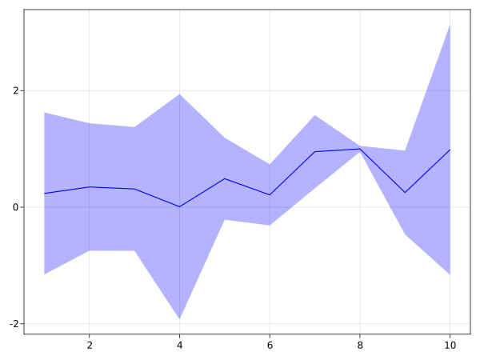
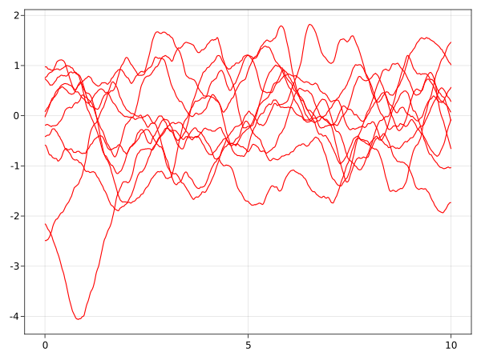

API
Symmetric band
AbstractGPsMakie.symband — Functionsymband(x, y, Δy; bandscale=1.0, kwargs...)
symband(xy, Δy; bandscale=1.0, kwargs...)Plot a symmetric band of radius bandscale * Δy around (x, y).
Attributes
Available attributes and their defaults for MakieCore.Combined{AbstractGPsMakie.symband, T} where T are:
bandscale 1.0
color RGBA{Float32}(0.0f0,0.0f0,0.0f0,0.6f0)
colormap :viridis
colorrange MakieCore.Automatic()
cycle [:color => :patchcolor]
inspectable true
linecolor MakieCore.Automatic()
linestyle "nothing"
linewidth 1.5Example
using AbstractGPsMakie
using CairoMakie
x = 1:10
y = rand(10)
Δy = rand(10)
symband(x, y, Δy; color=(:blue, 0.3), bandscale=2.5)
Samples
AbstractGPsMakie.gpsample — Functiongpsample([x, ]gp::FiniteGP; samples=1, orbit=0.0, kwargs...)Plot sample(s) from the finite projection of the Gaussian process gp along x.
If x is not provided, it is set to gp.x.
The orbit keyword argument can be used to visualize a manifold of similar samples.[PH2013] Values are mapped to the interval $[0, 1)$ which correspond to angles in $[0, 2\pi)$ on the great circle of samples.
Attributes
Available attributes and their defaults for MakieCore.Combined{AbstractGPsMakie.gpsample, T} where T are:
color :black
colormap :viridis
colorrange MakieCore.Automatic()
cycle [:color]
inspectable true
linestyle "nothing"
linewidth 1.5
orbit 0.0
samples 1gpsample(x::AbstractVector, gp::AbstractGP; kwargs...)Plot sample(s) from the finite projection gp(x, 1e-9) along x.
AbstractGPsMakie.gpsample — Methodgpsample(x::AbstractVector, gp::AbstractGP; kwargs...)Plot sample(s) from the finite projection gp(x, 1e-9) along x.
Example
using AbstractGPs
using AbstractGPsMakie
using CairoMakie
gp = GP(Matern32Kernel())
gpsample(0:0.01:10, gp; samples=10, color=:red)
- PH2013Philipp Hennig (2013). Animating Samples from Gaussian Distributions. Technical Report No. 8 of the Max Planck Institute for Intelligent Systems.